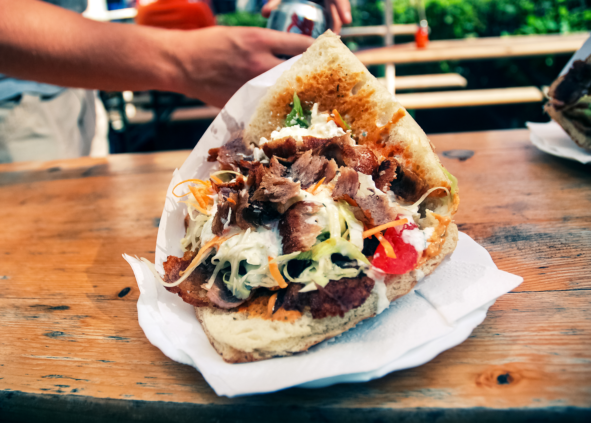

Döner kebab
Back to Home

File:Donner Kebab, Cologne, Germany (1057919169).jpg: Alex Kehr from Malibu, United States derivative work: Georgfotoart, CC BY 2.0, via Wikimedia Commons / Cropped from original
Description
Doner kebab or döner kebab is a Turkish dish made of meat cooked on a vertical rotisserie. Seasoned meat stacked in the shape of an inverted cone is turned slowly on the rotisserie, next to a vertical cooking element. The operator uses a knife to slice thin shavings from the outer layer of the meat as it cooks. The vertical rotisserie was invented in the 19th-century Ottoman Empire, and dishes such as the Arab shawarma, Greek gyros, Greek-Canadian donair, and Mexican al pastor are derived from the rotisserie technique of this dish.
The modern sandwich variant of doner kebab originated and was popularized in 1970s West Berlin by Turkish immigrants. This was recognised by the Berlin-based Association of Turkish Döner Manufacturers in Europe in 2011.
Ingredients
- 1 kg lamb or beef mince (ground meat) , preferably 15% fat
- 200 g streaky bacon , roughly diced
- 1 onion , diced (brown, yellow, white)
- 2 clove garlic , roughly chopped
- 1 tbsp vegetable oil or olive oil (for frying)
- 1 tsp dried oregano
- 2 tsp ground cumin
- 2 tsp ground coriander
- 1/2 tsp cinnamon
- 3 tsp salt , kosher/cooking salt
- 1 tsp black pepper
- 8 flatbreads (Lebanese bread authentic)
- 1 iceeberg lettuce , finely shredded
- 6 tomatoes , halved and sliced
- 2 red onions , finely sliced
- Hummus
- Yogurt sauce , optional
- More Sauce options: chilli sauce/Sriracha (I use this), BBQ, sweet chilli, tomato sauce/ketchup
- Extra options: tabbouleh, shredded cheese
Steps
- Mix beef or lamb with all the Spices – mix well using your hands.
- Cover and refrigerate 2 hours minimum, or up to 24 hours.
- Preheat oven to 170°C/ 325°F (150°C fan).
- Line baking pan with foil.
- Check to ensure skewers are long enough to prop on the sides of the pan.
- Place onion, bacon and garlic in a 8 cup/2L+ food processor. Blitz until it becomes a paste, ~30 sec on high, scraping down sides as you go.
- Add meat and blitz on low until it becomes a paste, scraping down sides (~1 min for powerful food processors, 2 min for less powerful).
- Turn meat out onto work surface. Wet hands with water, then shape into an even block 20cm/8″ long.
- Place 2 x 60cm / 2 feet long pieces of foil overlapping each other by 1/3.
- Place meat on the end of the foil, then roll it up, tightly wrapping it in the foil.
- Twist the ends firmly to form a log 25cm/10″ long, then snip off excess foil. Roll into even log.
- Thread skewers through the log.
- Place log elevated in pan by propping skewers on the edge of the pan.
- Cook for 1 1/2 hours, turning once after 1 hour, until the log reaches 70°C/160°F (up to 80°C/175°F is fine). The log is cooked at this point.
- Remove foil from log but leave skewers in place.
- Increase oven heat to 250°C/480°F, or as high as your oven can go if it can’t reach this.
- Bake for 10 to 15 minutes, rotating once, until browned all over.
- Remove skewers then stand the meat upright.
- Shave meat thinly – carve as much as you intend to use.
- Heat oil in a skillet over medium high heat. Cook shaved meat lightly coloured but still "floppy" (not crisped). Use immediately for Doner Kebabs!
- Smear hummus on warmed flatbread. Top with lettuce, tomato, and onion.
- Pile on Doner Kebab Meat. Drizzle with sauce(s) of choice.
- Roll up tightly, wrap in foil if desired (to hold together). Grab and devour!
Back to Home